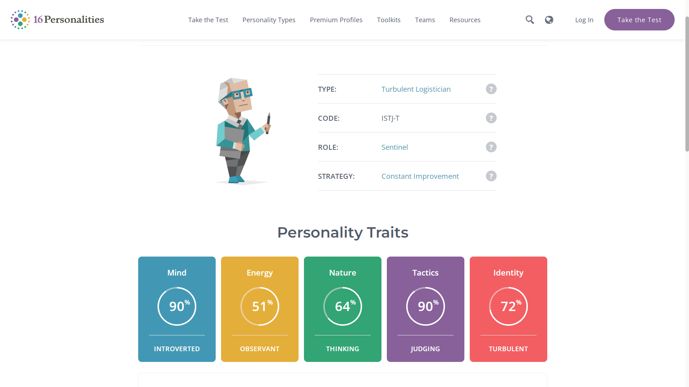
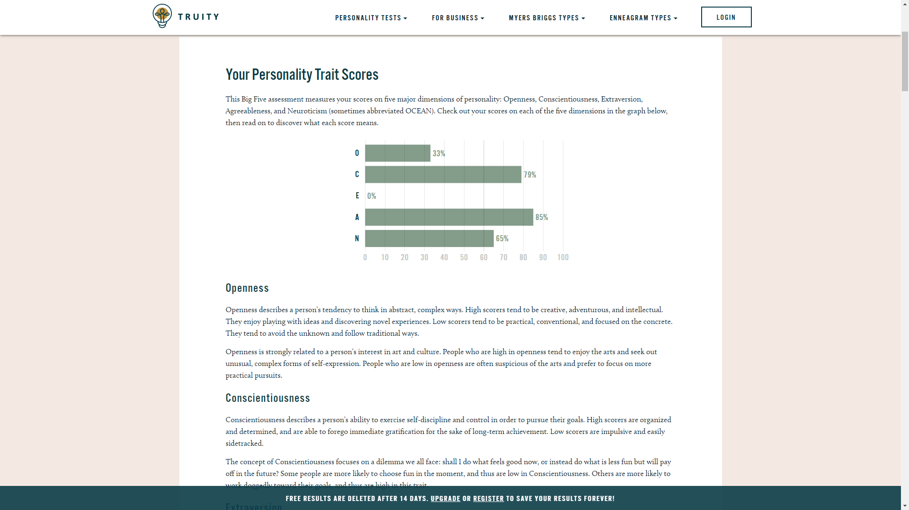
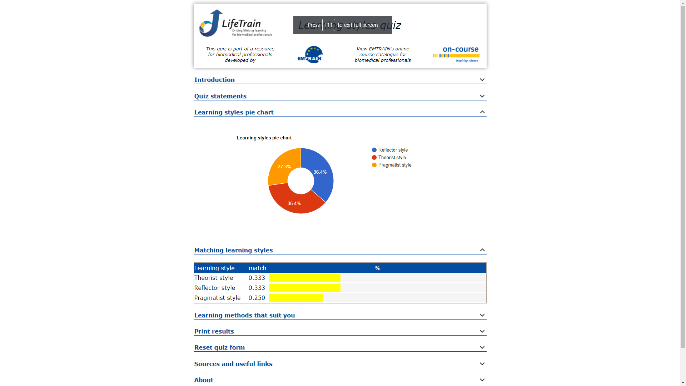

Personality profile based on multiple online tests as seen below
  The results from these tests give an accurate representation to the employer or anyone looking into it about my personality and behaviour. However I don’t think humans are very static to a result, meaning that they are fixed to it from the start till the end but sway to other similar personalities depending on their mood. These tests don’t define someone but give a thorough heads up about the person. In a team environment these tests should not affect my behaviour or work style in any way; in fact it may give others a good indication on how to deal with me or how I should deal with others which should improve the overall workflow. When forming a team the different personalities can decide who is better suited for the different roles, an example can be that someone who is good at public speaking can hook the audience through various techniques as that is their personality while someone who is very knowledgeable of the subject can convey clearly the facts and details in an easy to digest manner.